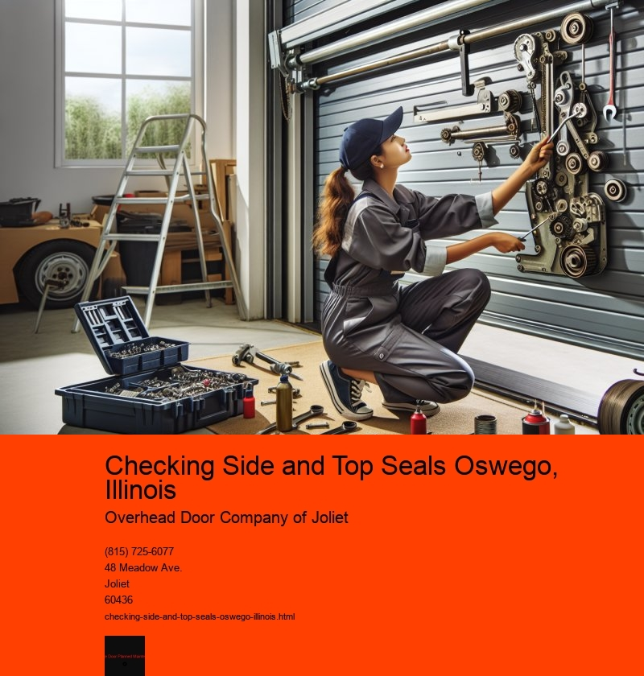

Checking side and top seals is an essential maintenance task for residents and businesses in Oswego, Illinois. This process is crucial for ensuring the energy efficiency and security of various structures, such as homes, commercial buildings, and even vehicles. In a town like Oswego, where weather conditions can vary significantly throughout the year, maintaining these seals can have a substantial impact on both comfort and cost savings.
Oswego, located in the northern part of Illinois, experiences a wide range of weather conditions, from hot summers to cold, snowy winters. These fluctuations can put a strain on the seals of doors and windows, which are integral components in controlling the internal climate of buildings. Checking and maintaining these seals helps to prevent drafts, which can lead to increased heating and cooling costs. By ensuring that side and top seals are intact and functioning properly, homeowners and business owners in Oswego can save significantly on energy bills.
Moreover, checking these seals is not just about energy efficiency; it also plays a vital role in ensuring security. Poorly sealed doors and windows are more susceptible to forced entry, making them a potential security risk. Regular inspection and maintenance of side and top seals can help prevent such vulnerabilities. In a community-focused town like Oswego, where safety and security are paramount, taking these preventative measures can provide peace of mind to residents and business owners alike.
The process of checking side and top seals is relatively straightforward but requires attention to detail. It involves inspecting the seals for any signs of wear and tear, such as cracks, gaps, or deformation. These issues can arise due to age, exposure to harsh weather conditions, or even improper installation. Once identified, damaged seals should be promptly repaired or replaced to maintain their effectiveness.
In Oswego, local hardware stores and service providers offer various solutions for seal maintenance and replacement. Residents often have access to expert advice and products designed to withstand the specific climate challenges of the area. This local expertise can be invaluable when it comes to selecting the right materials and methods for maintaining seals in optimal condition.
Furthermore, checking side and top seals can also contribute to environmental sustainability. By ensuring that buildings are properly sealed, less energy is required to heat or cool them, thereby reducing the overall carbon footprint. This is an important consideration for a community like Oswego, where there is an increasing awareness of and commitment to sustainable practices.
In conclusion, checking side and top seals in Oswego, Illinois, is a critical task that offers numerous benefits, from energy efficiency and cost savings to enhanced security and environmental sustainability. Whether for a residential home or a commercial building, maintaining these seals ensures a comfortable and secure environment while contributing to the communitys broader goals of safety and sustainability. Regular maintenance and attention to these details not only improve the quality of life for Oswego residents but also reflect the towns commitment to responsible and proactive living.
Proper Alignment for Energy Efficiency Oswego, Illinois
